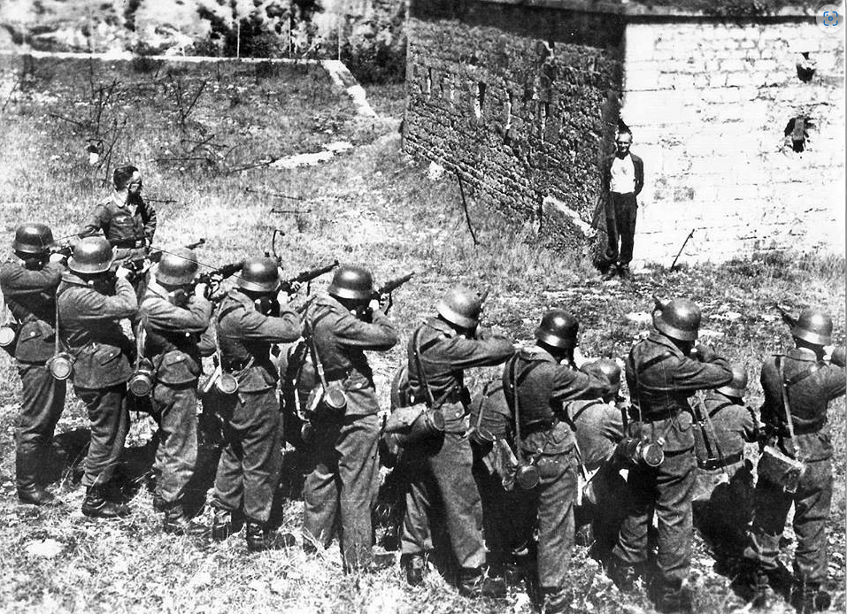

câmara de gás
como funcionavam?
Uma câmara de gás é um dispositivo para matar seres humanos ou outros animais com gás que consiste em uma câmara fechada na qual um veneno ou gás asfixiante é introduzido. Os agentes tóxicos mais vulgarmente utilizados são cianeto de hidrogênio, dióxido de carbono. O monóxido de carbono também têm sido utilizado.As câmaras de gás foram usadas como um método de execução de prisioneiros condenados nos Estados Unidos no início dos anos 1920. Durante o Holocausto, foram projetadas câmaras de gás de grande escala para assassinato em massa cometidos durante a Alemanha nazista como parte de seu programa de genocídio.

paredão de fuzilamento
Em 1939-1940, após a partição da Polônia pela Alemanha e pela União Soviética, os soviéticos anexaram os países Bálticos e regiões da Polônia e da Romênia que, anterioremente à Guerra, tinham grandes populações judaicas. Após a invasão da União Soviética pelos alemães, em junho de 1941 (conhecida como “Operação Barbarossa”), os nazistas, bem como seus aliados e colaboradores, efetuaram milhares de ações de fuzilamento em massa nos territórios que haviam tomado das forças soviéticas
No verão de 1941, após o ataque alemão à União Soviética, os alemães começaram a efetuar fuzilamentos em massa de homens, mulheres e crianças judias dentro do território tomados das forças soviéticas pelos nazistas. Esses assassinatos faziam parte dos planos para a “Solução Final da Questão Judaica”, ou seja, o assassinato em massa dos judeus da Europa.
